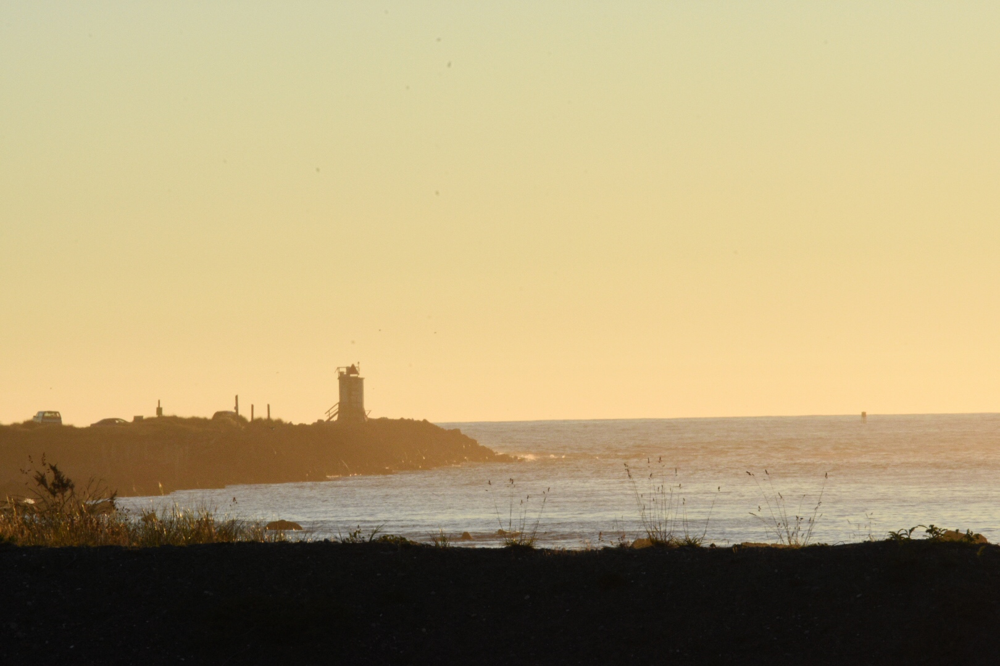

BLOG
Welcome to the blog of Owen Schigiel

Oregon Photography
My photography adventure in Oregon, August 28, 2017
Start of Blog Post.

BLOG ENTRY
Title description, April 2, 2014
Mauris neque quam, fermentum ut nisl vitae, convallis maximus nisl. Sed mattis nunc id lorem euismod placerat. Vivamus porttitor magna enim, ac accumsan tortor cursus at. Phasellus sed ultricies mi non congue ullam corper. Praesent tincidunt sed tellus ut rutrum. Sed vitae justo condimentum, porta lectus vitae, ultricies congue gravida diam non fringilla.
Owen Schigiel
Desc
Popular Posts
-
 Lorem
Lorem
Sed mattis nunc -
 Ipsum
Ipsum
Praes tinci sed -
 Dorum
Dorum
Ultricies congue

Tags
Travel Oregon